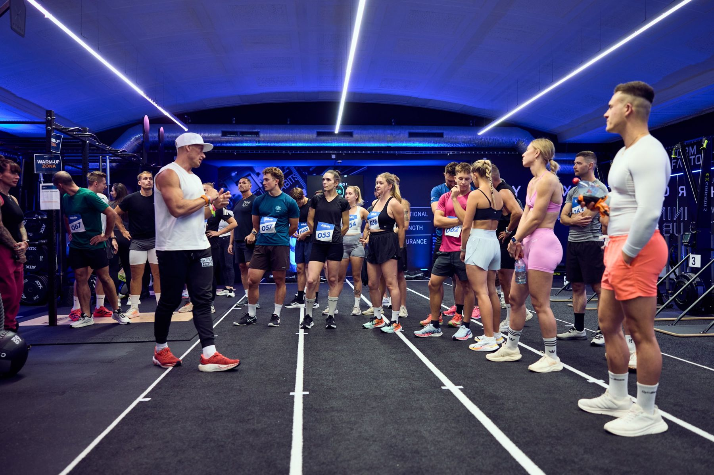
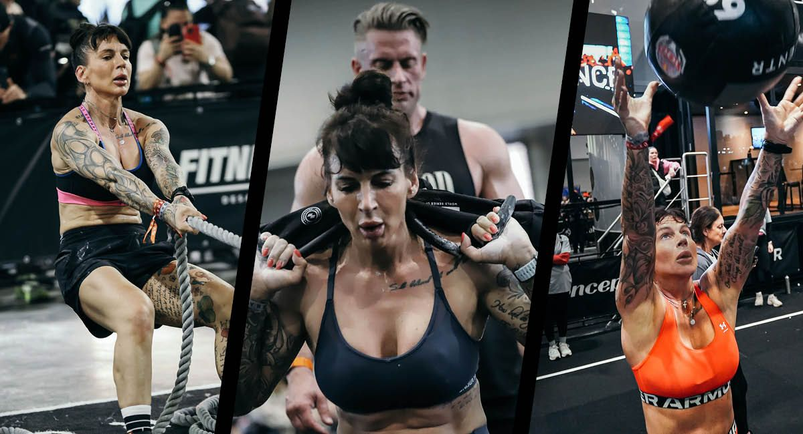
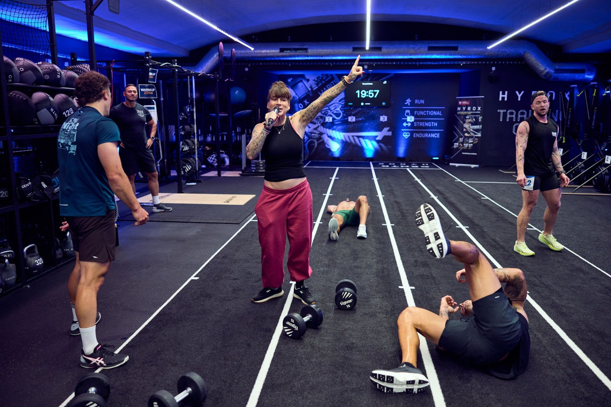

W1 · 10:00
Power Grid
4 × 3 min práce1 min přesun4 atleti ve vlně
ASkiErgmetry
BSled Pushmetry
CRowErgmetry
DKB Deadliftsopakování

Form Factory Vinohradská · Sobota 5. 12. 2026 · Sraz 9:30 · první start 10:00
Jednodenní individuální závod. Síla, vytrvalost a technika ve třech workoutech. Každý jede všechny tři a hodnotí se zvlášť ve čtyřech kategoriích.
O závodě
Factory Games je závod pro jednotlivce. Ráno silově vytrvalostní Power Grid, v poledne šestiminutové AMRAP peklo, odpoledne Final Grind. Mezi nimi vždy 38 minut na odpočinek a reset.
Přihlásíš se do ženské nebo mužské kategorie a vybereš si Open nebo Pro. Kvóty nejsou. Platí jen celkový limit 100 atletů, takže kdo dřív přijde, ten startuje.

Workouty
Ve W1 a W3 jedeš čtyři stanoviště A → B → C → D. Na každém tři minuty naplno, pak minuta na zápis a přesun. Výsledek se zapisuje v metrech, kaloriích nebo opakováních. Víc je líp.
Opakuješ v tomhle pořadí, dokud neskončí čas. Jedno kolo je 50 opakování. Počítá se každé platné opakování, takže 3 kola a 12 = 162.
Zátěže
Kategorii si vybíráš sám. Podívej se na váhy a buď k sobě upřímný. Pro je pro lidi, kteří tyhle zátěže zvládají opakovaně a pod únavou.
| Cvik | Women Open | Women Pro | Men Open | Men Pro |
|---|---|---|---|---|
| Sled Push | 100 kg | 150 kg | 150 kg | 200 kg |
| KB Deadlift | 2 × 16 kg | 2 × 24 kg | 2 × 24 kg | 2 × 32 kg |
| Wall Balls | 4 kg | 6 kg | 6 kg | 9 kg |
| KB Swings | 12 kg | 16 kg | 16 kg | 20 kg |
| DB Thrusters | 2 × 10 kg | 2 × 15 kg | 2 × 15 kg | 2 × 20 kg |
| Walking Lunges | 10 kg | 20 kg | 20 kg | 30 kg |
„2 ד znamená dva samostatné kusy. U lunges je uvedená celková nesená zátěž. Výšku wall ball targetu, typ swingu, způsob nesení u lunges a délku shuttle úseku zveřejníme v propozicích před otevřením registrace.
Jak se startuje
Ve W1 a W3 má vlna nejvýš čtyři atlety. Všichni začínají na A, každý na svém místě 1–4, a číslo dráhy si drží celý workout. Další vlna nastupuje na A po čtyřech minutách. V plném provozu jede 16 lidí naráz.
Mezi pracovními intervaly je vždy celá minuta na zápis, přesun a reset. Vlna 1 končí v 15. minutě a v 16. opouští stanoviště D. Ve W2 startuje osm atletů naráz každých 8 minut.
Speaker svolává tvou vlnu. Buď v call-up zóně.
Judge ověří číslo, kategorii a váhu na tvé dráze.
Celou vlnu řídí centrální zvukový signál.
Judge nahlas potvrdí výsledek, ty jdeš na další stanoviště.

Program dne
Číslo, rozpis vln a vlastní rozcvička.
Standardy, vlny, bodování a bezpečné přesuny.
25 vln, poslední startuje v 11:36.
Odpočinek a volitelná ukázka trenéra: rytmus wall balls a bezpečný KB swing.
13 vln po osmi atletech, poslední startuje ve 14:06.
Volitelná ukázka: obrátky na shuttle, koleno při lunges, timing thrusteru.
25 vln, poslední startuje v 16:26.
Zveřejnění pořadí všech kategorií a 10 minut na připomínky ke skóre.
Čtyři kategorie, společná fotka a konec.
Ukázky v pauzách jsou nezávodní a dobrovolné. Pokud se program zpozdí, zkrátíme je. Mezi koncem bloku a dalším startem ale vždy zůstane aspoň 30 minut.
Bodování
Metry, kalorie a opakování se nesčítají. V každé kategorii se výkon převede na pořadí a z pořadí na body. Hodnotí se jen uvnitř tvé kategorie.
body = 100 × (N − r) / (N − 1)
1. místo = 100 b · 11. místo = 50 b · 21. místo = 0 b
Průměr bodů ze čtyř stanovišť: Ski, sled, row, deadlift
0–100Pořadí podle celkového počtu platných opakování
0–100Průměr bodů ze čtyř stanovišť: bike, thrusters, lunges, shuttle
0–100W1 + W2 + W3
max 300Shodný výkon dostane průměrné pořadí, třeba shoda na 2.–3. místě = 2,5. Při shodě v celkovém pořadí rozhoduje vyšší skóre ve W3, potom ve W2. Body se počítají bez průběžného zaokrouhlování a zobrazují na dvě desetinná místa. Průběžné pořadí uvidíš na webu přes QR kód.
Pravidla
Start i stop řídí centrální zvukový signál. Počítá se jen opakování nebo metr dokončený před stopem.
Judge oznámí neplatné opakování okamžitě a řekne proč. Ve W2 musíš dodělat předepsané platné repy, než přejdeš na další cvik.
Po každém stanovišti judge nahlas potvrdí výsledek. Kartu podepíšeš po odchodu ze závodní zóny.
Přesný rozsah deadliftu, thrusteru a burpee, pravidla pro pozdní příchod, DNF a námitky budou v propozicích. Před závodem k nim bude i demonstrační video.
Kdo to vede
Dvacet lidí, z toho dvanáct judges. Poznáš je podle nápisu na zádech.
Hlavní organizátor. Řídí celý závod, časové signály, nástupy a přesuny.
Svolává vlny, drží energii v hale a vede vyhlášení.
Standardy, briefing judges a rozhodování sporných situací.
Časté otázky
Podle zátěží. Když 2 × 24 kg na deadlift nebo 9 kg wall ball pro tebe znamená boj o každé opakování, jdi Open. V Open nejde o menší výkon, jen o zátěž, se kterou můžeš jet naplno celé tři minuty.
Ano. Výsledek je součet všech tří. Každý workout má stejnou váhu, maximum je 100 bodů za každý.
Startovné je [Kč __] a platí se při registraci. Kapacita je 100 atletů celkem, bez kvót pro jednotlivé kategorie.
Sraz je v 9:30, vyhlášení končí v 17:40. Mezi workouty máš vždy kolem dvou hodin podle toho, ve které vlně jedeš. Vezmi si jídlo a pití na celý den.
Boty na běh i dřep, pití, něco k jídlu, ručník a teplé oblečení na pauzy. Číslo dostaneš u check-inu.
Průběžné pořadí na webu přes QR kód, který bude u registrace a v hale. Konečné výsledky po 17:00, po desetiminutovém okně na připomínky.
Registrace
Sobota 5. prosince, Form Factory Vinohradská. Vyber kategorii, zaplať startovné a před závodem ti pošleme vlnu a dráhu na všechny tři workouty.
Form Factory Vinohradská · Saturday 5 Dec 2026 · Check-in 9:30 · first start 10:00
A one-day individual competition. Strength, endurance and skill across three workouts. Everyone does all three, ranked separately in four divisions.
The event
Factory Games is an individual competition. Power Grid in the morning, a six-minute AMRAP at noon, Final Grind in the afternoon. Always 38 minutes in between to rest and reset.
Sign up for the women's or men's division and pick Open or Pro. No quotas per division, just an overall cap of 100 athletes. First come, first served.
Workouts
In W1 and W3 you move through four stations A → B → C → D. Three minutes all-out on each, then one minute to log your score and move. Scores are in metres, calories or reps. More is better.
Repeat in this order until time runs out. One round is 50 reps. Every valid rep counts, so 3 rounds plus 12 = 162.
Weights
You pick your division. Look at the weights and be honest with yourself. Pro is for athletes who can move these loads again and again, under fatigue.
| Exercise | Women Open | Women Pro | Men Open | Men Pro |
|---|---|---|---|---|
| Sled Push | 100 kg | 150 kg | 150 kg | 200 kg |
| KB Deadlift | 2 × 16 kg | 2 × 24 kg | 2 × 24 kg | 2 × 32 kg |
| Wall Balls | 4 kg | 6 kg | 6 kg | 9 kg |
| KB Swings | 12 kg | 16 kg | 16 kg | 20 kg |
| DB Thrusters | 2 × 10 kg | 2 × 15 kg | 2 × 15 kg | 2 × 20 kg |
| Walking Lunges | 10 kg | 20 kg | 20 kg | 30 kg |
“2 ×” means two separate implements. For lunges the load listed is the total carried. Wall ball target height, swing type, lunge carry position and shuttle distance will be in the rulebook before registration opens.
How heats work
In W1 and W3 a heat has up to four athletes. Everyone starts at A in their own lane 1–4 and keeps that lane for the whole workout. The next heat steps onto A four minutes later. At full flow, 16 people are working at once.
Between work intervals there is always a full minute to log, move and reset. Heat 1 finishes in minute 15 and clears station D in minute 16. In W2, eight athletes start together every 8 minutes.
The speaker calls your heat. Be in the call-up zone.
Your judge checks your number, division and the weight in your lane.
A central sound signal runs every heat.
The judge confirms your score out loud and you move to the next station.
Schedule
Bib number, heat list and your own warm-up.
Standards, heats, scoring and safe transitions.
25 heats, the last one starts at 11:36.
Rest, plus an optional coach demo: wall ball rhythm and a safe KB swing.
13 heats of eight, the last one starts at 14:06.
Optional demo: shuttle turns, knee contact on lunges, thruster timing.
25 heats, the last one starts at 16:26.
Rankings for all divisions go live, followed by a 10-minute window for score queries.
Four divisions, group photo, done.
Demos during the breaks are non-competitive and optional. If we run late we'll shorten them, but there will always be at least 30 minutes between the end of one block and the next start.
Scoring
Metres, calories and reps are never added up. Within each division your performance becomes a rank, and the rank becomes points. You're only ranked against your own division.
points = 100 × (N − r) / (N − 1)
1st = 100 pts · 11th = 50 pts · 21st = 0 pts
Average points from four stations: ski, sled, row, deadlift
0–100Ranked by total valid reps
0–100Average points from four stations: bike, thrusters, lunges, shuttle
0–100W1 + W2 + W3
max 300Tied performances share an averaged rank, e.g. a tie for 2nd–3rd = 2.5. Overall ties go to the higher W3 score, then W2. Points are not rounded along the way and are shown to two decimals. Live rankings are on the web via QR code.
Rules
Start and stop run on a central sound signal. Only reps or metres completed before the stop count.
Your judge calls a no-rep immediately and tells you why. In W2 you finish the prescribed valid reps before moving to the next exercise.
After each station the judge confirms your score out loud. You sign the card once you have left the competition area.
Exact range of motion for deadlifts, thrusters and burpees, plus rules on late arrival, DNF and appeals, will be in the rulebook, with a demo video before the event.
Who runs it
Twenty people, twelve of them judges. You'll recognise them by the label on their back.
Head organiser. Runs the whole event: timing signals, call-ups and transitions.
Calls the heats, keeps the energy up and hosts the awards.
Standards, judges' briefing and calls on disputed situations.
FAQ
Go by the weights. If 2 × 24 kg deadlifts or a 9 kg wall ball means fighting for every rep, go Open. Open isn't a lesser effort, it's a load you can push hard for the full three minutes.
Yes. Your result is the sum of all three. Each workout carries the same weight, worth up to 100 points.
The entry fee is [CZK __], paid at registration. Capacity is 100 athletes in total, with no quotas per division.
Check-in is at 9:30 and the awards wrap up at 17:40. Between workouts you'll have around two hours, depending on your heat. Bring food and drinks for the whole day.
Shoes for running and squatting, drinks, food, a towel and warm clothes for the breaks. You'll get your number at check-in.
Live rankings on the web via a QR code at check-in and around the venue. Final results after 17:00, following the 10-minute window for queries.
Register
Saturday 5 December, Form Factory Vinohradská, Prague. Pick your division, pay the entry fee, and before the event we'll send you your heat and lane for all three workouts.
Form Factory Vinohradská · Sobota 5.12.2026 · Zbiórka 9:30 · pierwszy start 10:00
Jednodniowe zawody indywidualne. Siła, wytrzymałość i technika w trzech workoutach. Każdy robi wszystkie trzy, klasyfikacja osobno w czterech kategoriach.
O zawodach
Factory Games to zawody indywidualne. Rano siłowo-wytrzymałościowy Power Grid, w południe sześciominutowy AMRAP, po południu Final Grind. Między nimi zawsze 38 minut na odpoczynek i reset.
Zapisujesz się do kategorii kobiet lub mężczyzn i wybierasz Open albo Pro. Bez limitów na kategorie, obowiązuje tylko łączny limit 100 zawodników. Kto pierwszy, ten startuje.
Workouty
W W1 i W3 przechodzisz cztery stanowiska A → B → C → D. Na każdym trzy minuty na maksa, potem minuta na zapis i przejście. Wynik liczy się w metrach, kaloriach lub powtórzeniach. Więcej znaczy lepiej.
Powtarzasz w tej kolejności do końca czasu. Jedna runda to 50 powtórzeń. Liczy się każde poprawne powtórzenie, więc 3 rundy i 12 = 162.
Obciążenia
Kategorię wybierasz sam. Spójrz na ciężary i bądź wobec siebie szczery. Pro jest dla osób, które radzą sobie z tymi obciążeniami wielokrotnie i pod zmęczeniem.
| Ćwiczenie | Women Open | Women Pro | Men Open | Men Pro |
|---|---|---|---|---|
| Sled Push | 100 kg | 150 kg | 150 kg | 200 kg |
| KB Deadlift | 2 × 16 kg | 2 × 24 kg | 2 × 24 kg | 2 × 32 kg |
| Wall Balls | 4 kg | 6 kg | 6 kg | 9 kg |
| KB Swings | 12 kg | 16 kg | 16 kg | 20 kg |
| DB Thrusters | 2 × 10 kg | 2 × 15 kg | 2 × 15 kg | 2 × 20 kg |
| Walking Lunges | 10 kg | 20 kg | 20 kg | 30 kg |
„2 ×” oznacza dwa osobne przyrządy. Przy lunges podano łączne niesione obciążenie. Wysokość celu wall ball, typ swingu, sposób niesienia przy lunges i długość odcinka shuttle opublikujemy w regulaminie przed otwarciem rejestracji.
Jak wygląda start
W W1 i W3 heat ma maksymalnie czterech zawodników. Wszyscy zaczynają na A, każdy na swoim torze 1–4, i trzyma go przez cały workout. Kolejny heat wchodzi na A po czterech minutach. W pełnym ruchu pracuje naraz 16 osób.
Między interwałami pracy zawsze jest pełna minuta na zapis, przejście i reset. Heat 1 kończy w 15. minucie i w 16. opuszcza stanowisko D. W W2 ośmiu zawodników startuje razem co 8 minut.
Speaker wywołuje twój heat. Bądź w strefie call-up.
Sędzia sprawdza numer, kategorię i ciężar na twoim torze.
Cały heat prowadzi centralny sygnał dźwiękowy.
Sędzia głośno potwierdza wynik, ty idziesz na kolejne stanowisko.
Harmonogram dnia
Numer startowy, rozpiska heatów i własna rozgrzewka.
Standardy, heaty, punktacja i bezpieczne przejścia.
25 heatów, ostatni startuje o 11:36.
Odpoczynek i opcjonalny pokaz trenera: rytm wall balls i bezpieczny KB swing.
13 heatów po ośmiu zawodników, ostatni startuje o 14:06.
Opcjonalny pokaz: nawroty na shuttle, kolano przy lunges, timing thrustera.
25 heatów, ostatni startuje o 16:26.
Publikacja klasyfikacji wszystkich kategorii i 10 minut na uwagi do wyników.
Cztery kategorie, wspólne zdjęcie i koniec.
Pokazy w przerwach są poza rywalizacją i dobrowolne. Przy opóźnieniu je skrócimy, ale między końcem bloku a kolejnym startem zawsze zostanie co najmniej 30 minut.
Punktacja
Metrów, kalorii i powtórzeń się nie sumuje. W każdej kategorii wynik zamienia się na miejsce, a miejsce na punkty. Klasyfikacja tylko w obrębie twojej kategorii.
punkty = 100 × (N − r) / (N − 1)
1. miejsce = 100 pkt · 11. miejsce = 50 pkt · 21. miejsce = 0 pkt
Średnia punktów z czterech stanowisk: ski, sled, row, deadlift
0–100Miejsce według łącznej liczby poprawnych powtórzeń
0–100Średnia punktów z czterech stanowisk: bike, thrusters, lunges, shuttle
0–100W1 + W2 + W3
max 300Remis daje uśrednione miejsce, np. remis na 2.–3. miejscu = 2,5. Przy remisie w klasyfikacji generalnej decyduje wyższy wynik w W3, potem w W2. Punkty liczymy bez zaokrąglania po drodze i pokazujemy z dwoma miejscami po przecinku. Bieżące wyniki zobaczysz na stronie przez kod QR.
Zasady
Start i stop wyznacza centralny sygnał dźwiękowy. Liczy się tylko powtórzenie lub metr ukończony przed stopem.
Sędzia od razu ogłasza no-rep i mówi dlaczego. W W2 musisz dokończyć wymagane poprawne powtórzenia, zanim przejdziesz do kolejnego ćwiczenia.
Po każdym stanowisku sędzia głośno potwierdza wynik. Kartę podpisujesz po wyjściu ze strefy zawodów.
Dokładny zakres ruchu w deadlifcie, thrusterze i burpee oraz zasady spóźnienia, DNF i odwołań będą w regulaminie. Przed zawodami dodamy też film demonstracyjny.
Kto prowadzi
Dwadzieścia osób, w tym dwunastu sędziów. Poznasz ich po napisie na plecach.
Główny organizator. Prowadzi całe zawody: sygnały czasowe, wejścia i przejścia.
Wywołuje heaty, trzyma energię na hali i prowadzi dekorację.
Standardy, odprawa sędziów i rozstrzyganie spornych sytuacji.
FAQ
Według ciężarów. Jeśli 2 × 24 kg w deadlifcie albo 9 kg wall ball to dla ciebie walka o każde powtórzenie, wybierz Open. Open to nie mniejszy wysiłek, tylko obciążenie, z którym pojedziesz na maksa całe trzy minuty.
Tak. Wynik to suma wszystkich trzech. Każdy workout ma tę samą wagę, maksymalnie 100 punktów.
Wpisowe wynosi [CZK __] i płacisz je przy rejestracji. Limit to 100 zawodników łącznie, bez limitów na kategorie.
Zbiórka o 9:30, dekoracja kończy się o 17:40. Między workoutami masz około dwóch godzin, zależnie od heatu. Weź jedzenie i picie na cały dzień.
Buty do biegania i przysiadów, picie, jedzenie, ręcznik i ciepłe ubranie na przerwy. Numer dostaniesz przy check-inie.
Bieżące wyniki na stronie przez kod QR, dostępny przy rejestracji i na hali. Wyniki końcowe po 17:00, po 10-minutowym oknie na uwagi.
Rejestracja
Sobota 5 grudnia, Form Factory Vinohradská, Praga. Wybierz kategorię, opłać wpisowe, a przed zawodami wyślemy ci heat i tor na wszystkie trzy workouty.
Form Factory Vinohradská · Samstag, 5.12.2026 · Treffpunkt 9:30 · erster Start 10:00
Eintägiger Einzelwettkampf. Kraft, Ausdauer und Technik in drei Workouts. Jeder absolviert alle drei, gewertet wird getrennt in vier Kategorien.
Der Wettkampf
Factory Games ist ein Einzelwettkampf. Morgens Power Grid, mittags ein sechsminütiges AMRAP, nachmittags Final Grind. Dazwischen jeweils 38 Minuten für Erholung und Reset.
Du meldest dich in der Frauen- oder Männerkategorie an und wählst Open oder Pro. Keine Quoten pro Kategorie, nur ein Gesamtlimit von 100 Athleten. Wer zuerst kommt, startet.
Workouts
In W1 und W3 absolvierst du vier Stationen A → B → C → D. Drei Minuten Vollgas pro Station, dann eine Minute für Eintragen und Wechsel. Gewertet wird in Metern, Kalorien oder Wiederholungen. Mehr ist besser.
Wiederhole in dieser Reihenfolge, bis die Zeit abläuft. Eine Runde sind 50 Wiederholungen. Jede gültige Wiederholung zählt, also 3 Runden plus 12 = 162.
Gewichte
Die Kategorie wählst du selbst. Schau dir die Gewichte an und sei ehrlich zu dir. Pro ist für alle, die diese Lasten wiederholt und unter Ermüdung bewegen.
| Übung | Women Open | Women Pro | Men Open | Men Pro |
|---|---|---|---|---|
| Sled Push | 100 kg | 150 kg | 150 kg | 200 kg |
| KB Deadlift | 2 × 16 kg | 2 × 24 kg | 2 × 24 kg | 2 × 32 kg |
| Wall Balls | 4 kg | 6 kg | 6 kg | 9 kg |
| KB Swings | 12 kg | 16 kg | 16 kg | 20 kg |
| DB Thrusters | 2 × 10 kg | 2 × 15 kg | 2 × 15 kg | 2 × 20 kg |
| Walking Lunges | 10 kg | 20 kg | 20 kg | 30 kg |
„2 ד bedeutet zwei einzelne Geräte. Bei den Lunges ist das gesamte getragene Gewicht angegeben. Wall-Ball-Zielhöhe, Swing-Variante, Trageposition bei den Lunges und Shuttle-Distanz stehen vor Anmeldestart im Regelwerk.
So läuft der Start
In W1 und W3 hat ein Heat höchstens vier Athleten. Alle starten an A auf ihrer eigenen Bahn 1–4 und behalten sie das ganze Workout. Der nächste Heat startet vier Minuten später an A. Im Vollbetrieb arbeiten 16 Leute gleichzeitig.
Zwischen den Arbeitsintervallen gibt es immer eine volle Minute zum Eintragen, Wechseln und Zurücksetzen. Heat 1 endet in Minute 15 und verlässt Station D in Minute 16. In W2 starten acht Athleten gemeinsam alle 8 Minuten.
Der Speaker ruft deinen Heat auf. Sei in der Call-up-Zone.
Dein Judge prüft Nummer, Kategorie und Gewicht auf deiner Bahn.
Ein zentrales Tonsignal steuert jeden Heat.
Der Judge bestätigt dein Ergebnis laut, du gehst zur nächsten Station.
Zeitplan
Startnummer, Heatliste und eigenes Aufwärmen.
Standards, Heats, Wertung und sichere Wechsel.
25 Heats, der letzte startet um 11:36.
Erholung und optionale Coach-Demo: Wall-Ball-Rhythmus und sicherer KB-Swing.
13 Heats zu acht, der letzte startet um 14:06.
Optionale Demo: Shuttle-Wenden, Knie bei den Lunges, Thruster-Timing.
25 Heats, der letzte startet um 16:26.
Veröffentlichung aller Ranglisten und 10 Minuten für Rückfragen zum Score.
Vier Kategorien, Gruppenfoto, Schluss.
Die Demos in den Pausen sind ohne Wertung und freiwillig. Bei Verzögerung kürzen wir sie, zwischen Blockende und nächstem Start bleiben aber immer mindestens 30 Minuten.
Wertung
Meter, Kalorien und Wiederholungen werden nicht addiert. In jeder Kategorie wird die Leistung zum Rang und der Rang zu Punkten. Gewertet wird nur innerhalb deiner Kategorie.
Punkte = 100 × (N − r) / (N − 1)
Platz 1 = 100 P. · Platz 11 = 50 P. · Platz 21 = 0 P.
Durchschnitt aus vier Stationen: Ski, Sled, Row, Deadlift
0–100Rang nach Gesamtzahl gültiger Wiederholungen
0–100Durchschnitt aus vier Stationen: Bike, Thrusters, Lunges, Shuttle
0–100W1 + W2 + W3
max 300Gleiche Leistungen teilen sich den gemittelten Rang, z. B. Gleichstand auf Platz 2–3 = 2,5. Bei Gleichstand in der Gesamtwertung entscheidet das höhere Ergebnis in W3, dann in W2. Punkte werden nicht zwischengerundet und mit zwei Dezimalstellen angezeigt. Live-Ranking im Web per QR-Code.
Regeln
Start und Stopp gibt ein zentrales Tonsignal. Es zählen nur Wiederholungen oder Meter, die vor dem Stopp fertig sind.
Dein Judge gibt ein No-Rep sofort mit Begründung. In W2 schließt du die vorgegebenen gültigen Wiederholungen ab, bevor du zur nächsten Übung wechselst.
Nach jeder Station bestätigt der Judge dein Ergebnis laut. Die Karte unterschreibst du nach Verlassen der Wettkampfzone.
Genauer Bewegungsumfang bei Deadlift, Thruster und Burpee sowie Regeln zu Verspätung, DNF und Einsprüchen stehen im Regelwerk. Vor dem Event gibt es dazu ein Demo-Video.
Wer leitet
Zwanzig Leute, davon zwölf Judges. Du erkennst sie an der Aufschrift auf dem Rücken.
Hauptorganisator. Leitet den gesamten Wettkampf: Zeitsignale, Aufrufe und Wechsel.
Ruft die Heats auf, hält die Stimmung hoch und moderiert die Siegerehrung.
Standards, Judges-Briefing und Entscheidung strittiger Situationen.
FAQ
Nach den Gewichten. Wenn 2 × 24 kg beim Deadlift oder ein 9-kg-Wall-Ball für dich Kampf um jede Wiederholung bedeutet, nimm Open. Open heißt nicht weniger Einsatz, sondern ein Gewicht, mit dem du drei Minuten Vollgas geben kannst.
Ja. Dein Ergebnis ist die Summe aller drei. Jedes Workout zählt gleich, maximal 100 Punkte.
Die Startgebühr beträgt [CZK __] und wird bei der Anmeldung bezahlt. Kapazität 100 Athleten insgesamt, ohne Quoten pro Kategorie.
Treffpunkt 9:30, die Siegerehrung endet um 17:40. Zwischen den Workouts hast du je nach Heat etwa zwei Stunden. Nimm Essen und Trinken für den ganzen Tag mit.
Schuhe zum Laufen und für Squats, Getränke, Essen, ein Handtuch und warme Kleidung für die Pausen. Deine Startnummer bekommst du beim Check-in.
Live-Ranking im Web per QR-Code am Check-in und in der Halle. Endergebnisse nach 17:00, nach dem 10-minütigen Fenster für Rückfragen.
Anmeldung
Samstag, 5. Dezember, Form Factory Vinohradská, Prag. Kategorie wählen, Startgebühr zahlen, und vor dem Event schicken wir dir Heat und Bahn für alle drei Workouts.